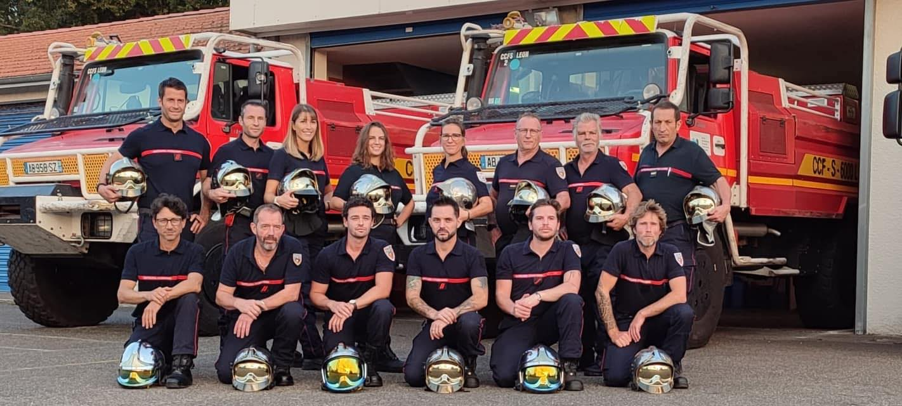

Présentation de l’Amicale des Sapeurs-Pompiers de Léon (Landes)
L’Amicale des Sapeurs-Pompiers de Léon est une association dynamique et solidaire qui
regroupe les membres actifs, anciens, et sympathisants du centre de secours de Léon,
au cœur des Landes. Fondée sur des valeurs de fraternité, d’engagement et de proximité,
elle a pour vocation de renforcer les liens entre les pompiers et de soutenir les actions
du corps dans la vie locale.
🎯 Nos missions principales :
- Favoriser la cohésion entre les sapeurs-pompiers à travers des moments conviviaux
(repas, sorties, cérémonies…)
- Organiser et participer à des événements festifs et solidaires dans la commune
(bal des pompiers, Téléthon, démonstrations…)
- Accompagner les familles de pompiers en cas de besoin et entretenir la mémoire
des anciens
- Promouvoir l’image et les valeurs du volontariat auprès du grand public
🎉 Un acteur engagé dans la vie locale :
L’Amicale est un pilier de la vie associative léonnaise. Chaque année, elle organise le traditionnel vide grenier du 15 Août, participe aux commémorations officielles, et soutient les initiatives locales. Elle est aussi un relais essentiel pour sensibiliser les jeunes au métier de sapeur-pompier et encourager les vocations.

Contactez-nous en cliquant sur le bouton ci-dessous